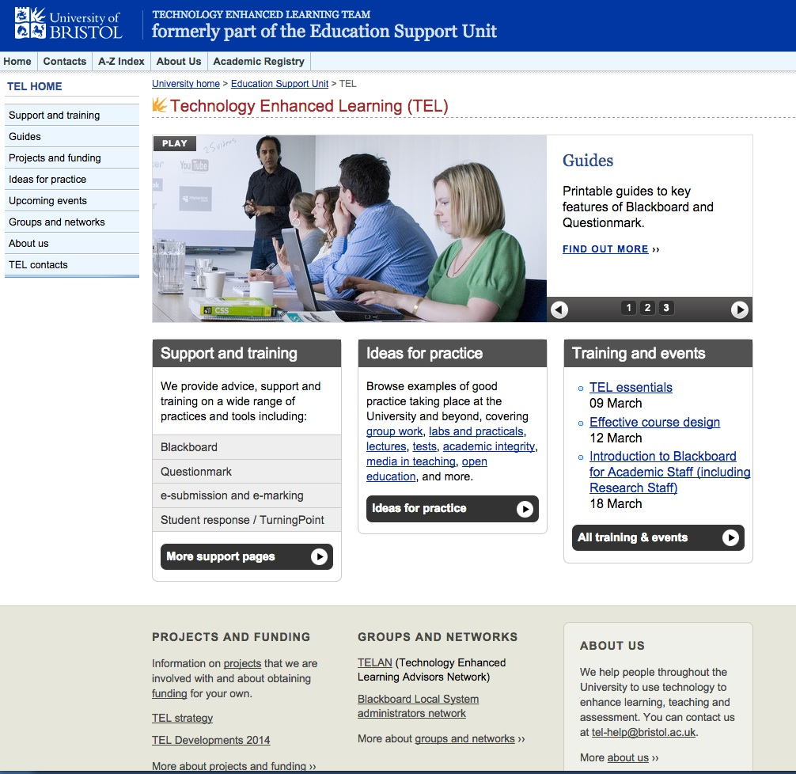
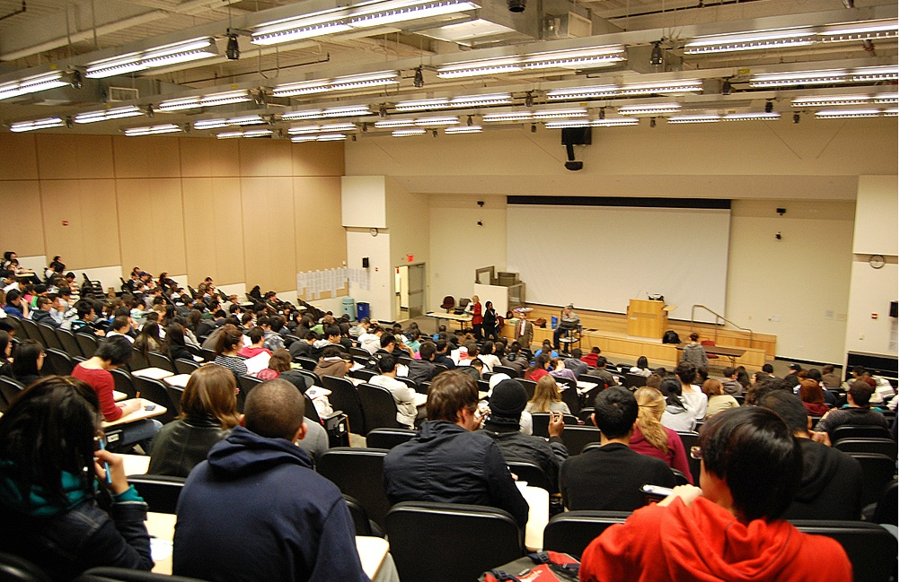
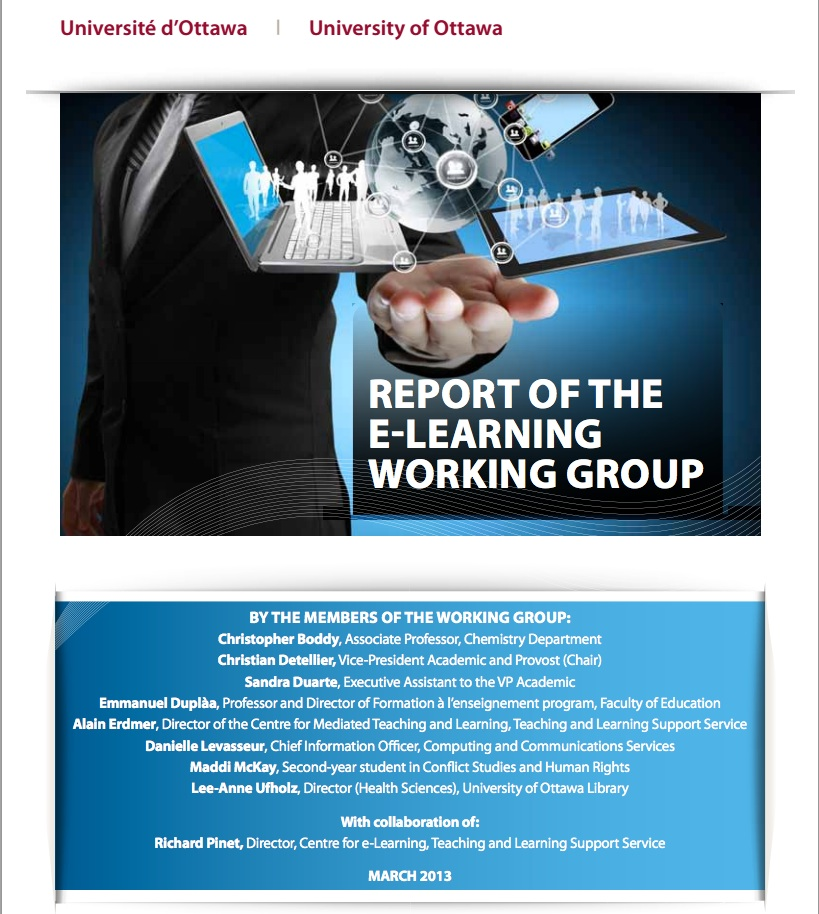

Also in this chapter you will find the following activities
Activity 12.2 Identifying your professional training needs
Activity 12.5 Designing a team approach
Activity 12.6 Developing an institutional strategy for supporting teaching and learning
Activity 12.7 Develop a future scenario for your teaching
At this point in the book, you might be forgiven for thinking that this is all too much, especially if you are a university professor whose passion is the discipline in which you are an expert, and whose priority is to extend the boundaries of knowledge in that subject through research or other scholarly work. Where an earth will you find the time to become expert in teaching if this means completely changing the teaching model you have become comfortable with?
You are not alone in thinking this. Martha Cleveland-Innes (2012) writes:
It is unrealistic to expect higher education faculty to have sound, current, content expertise, a productive research program, an active service commitment AND be expert online teachers. The biggest lie in the academy is that the role of faculty, and its rewards and responsibilities, is made up of a seemingly balanced set of activities around teaching, research and service (Atkinson, 2001). With some variation across type of institution, research is the most valued work and most notably rewarded. While this reality has not changed “…classroom teaching and course materials (have become) more sophisticated and complex in ways that translate into new forms of faculty work. ….. such new forms are not replacing old ones, but instead are layered on top of them, making for more work.” (Rhoades, 2000, p, 38). It is time to clarify this reality and consider how, if at all, changes in teaching are, or may be, integrated into the role of faculty member.
How changes may be integrated into the role of faculty member, instructor or classroom teacher in a digital age is what this chapter is about. It is not realistic to expect all teachers to be super-heroes (even if you are the exception), but it is realistic to expect all teachers to be competent and professional in a digital age.
The good news though is that if you have read your way through all the chapters in this book, you will have done what you need to do to be competent and professional for teaching in a digital age, and will certainly be ahead of 99 per cent of your colleagues on this (at least until they have also read this book). At the same time, there is much your employing organisation and senior administrators can do to help you in this, which is the focus of this chapter.
References
Atkinson, M.P. (2001) ‘The scholarship of teaching and learning: reconceptualizing scholarship and transforming the academy’ Social Forces, Vol. 79, No. 4 (pp. 1217-1229).
Cleveland-Innes, M. (2012) ‘Teaching in an online community of inquiry: student, faculty, and institutional adjustment in the new higher education’, in Akyol, Z. & Garrison, R.D. (Eds.) Educational communities of inquiry: theoretical framework, research and practice, (pp. 389-400). Hershey, PA: IGI Global.
Rhoades, G. (2000) ‘The changing role of faculty’ in Losco, J. and Fife, B. (eds.) Higher Education in Transition: the challenges of the new millennium Westport CT: Bergin and Garvey
Figure 12.2 A faculty development workshop
12.2.1 The need
By mid-August in most countries in the northern hemisphere, teachers’ pro-d and faculty development workshops and conferences have ended, and everyone has headed off for a well earned vacation. Many thousands will have learned how to use a learning management or lecture capture system for the first time, and hundreds of others will have been introduced to new technologies such as e-portfolios, mobile learning, and open educational resources. A smaller but significant number will have been introduced to new methods of teaching built around the potential of new technologies. All good stuff – and all totally inadequate for the needs facing teachers and instructors in a digital age.
12.2.2 A broken professional development model
In universities, faculty are trained, through the doctoral route, to do research, but there is no requirement to be trained in teaching methods. At best faculty development is voluntary for faculty once appointed, and although post-doctoral students may be offered short courses or in some instances even a certificate in preparation for classroom teaching, this is usually voluntary and minimal. Indeed, post-graduate students interested in experimenting with learning technologies or taking professional courses or programs in teaching are often deliberately discouraged by their supervisors from doing so, as it would detract from their research. Increased use of adjunct/contract faculty exacerbates the problem (see Section 12.4). Being on contract, they require payment for any training, but institutions are often reluctant to train contract workers who may then leave at the end of the contract and take their training and skills to a competitor.
The situation is somewhat different in two year colleges. Many jurisdictions (but by no means all) have a regional, state or provincial Instructor Diploma Program that some colleges require instructors to take on appointment or shortly afterwards. However, many of these programs have not been adapted to take account of online learning, and probably none are yet up to date on blended learning. I was an external reviewer for one such program a while ago, and there was almost no mention of online or blended learning. Most of the technologies discussed in this program were at least 20 years old.
The lack of comprehensive and systematic training at a pre-service level places a disproportionate burden on ongoing professional development, which is at best ad hoc and variable in both quantity and quality. Above all, it is an entirely voluntary system – in other words, teachers or instructors can choose not to take any in-service workshops or courses on teaching, if they decide – as most do – that their professional development time will be better spent focusing on research rather than teaching. Christensen Hughes and Mighty (2010) argue that less than 10 per cent of all university instructors take professional development activities focused on improving their teaching, and the faculty that do opt in are often those in least need of training as they are often already excellent teachers.
Lastly, most faculty and instructors do not base their teaching practice on empirically-based evidence or research on the effectiveness of different approaches. Christensen Hughes and Mighty (2010) have edited a collection of studies on research on teaching and learning in higher education. In the opening chapter the editors state:
‘…researchers have discovered much about teaching and learning in higher education, but that dissemination and uptake of this information have been limited. As such, the impact of educational research on faculty-teaching practice and student-learning experience has been negligible.’
In the same book, Christopher Knapper (also of Queens University) states (p. 229-230):
‘There is increasing empirical evidence from a variety of international settings that prevailing teaching practices in higher education do not encourage the sort of learning that contemporary society demands….Teaching remains largely didactic, assessment of student work is often trivial, and curricula are more likely to emphasize content coverage than acquisition of lifelong and life-wide skills….
[However] there is an impressive body of evidence on how teaching methods and curriculum design affect deep, autonomous and reflective learning. Yet most faculty are largely ignorant of this scholarship, and instructional practices are dominated by tradition rather than research evidence.’
This book has shown that we do not have to invent or discover what’s needed to teach well in a digital age. There is a well-established literature and generally agreed best practices, yet, as Christensen Hughes and Mighty have pointed out, many if not a majority of teachers and instructors are unaware or continue to ignore these standards.
12.2.3 Why the system needs to change
When university education was limited to an elite few students, where faculty had a close, one-on-one relationship with students, it was possible to manage quite effectively without formal training in teaching. That is not the case today. Faculty are challenged by large classes, and heterogeneous students who learn in a variety of ways, with different learning skills and abilities. The emphasis is changing from knowledge as content to knowledge as process. Teaching methods need to be chosen that will develop the skills and competencies needed in a knowledge-based society, and on top of all this, constantly changing technology requires instructors to have analytical frameworks to help choose and use technologies appropriately for teaching.
In particular, the profound effect of the Internet on scholarship, research, work and leisure requires major reconsideration of our teaching methods, if we are to develop the skills and knowledge our students will need in a knowledge-based society. This requires comprehensive and systematic training of our instructors, not a system that depends heavily on opting-in, and that fails to reward adequately excellence in teaching as measured by the standards required in today’s context.
Moving to blended, hybrid and online learning requires a much higher standard of training for faculty and instructors. It is not just a question of learning how to use a learning management system or an iPad. The use of technology needs to be combined with an understanding of how students learn, how skills are developed, how knowledge is represented through different media and then processed, and how learners use different senses for learning. It means examining different approaches to learning, such as the construction of knowledge compared with a transmission model of teaching, and how technology best works with either approach. Above all, it means linking the use of technology to the specific requirements of a particular knowledge domain or subject area.
The expansion into blended and online learning has been facilitated mainly by the establishment of separate learning technology support units to support faculty and instructors who do not have the experience or skills to teach online. Although this is essential, it will be prohibitively expensive to continue to expand such units as blended and online learning continues to grow (Bates and Sangrà, 2011). It is much more cost-effective to provide adequate initial pre-service training so that learning technology units can concentrate on training, professional development and R&D into new methods of teaching and learning as new technologies develop.
12.2.4 What needs to be done
Identifying the problem is much easier than fixing it. In particular, the culture especially of universities protects the existing system. Academic freedom is often used as an argument for the status quo, and unions in the college system insist on payment for instructors for any time spent on training over and above their normal teaching load. As Bates and Sangrà (2011) have pointed out, this is a systemic problem. It is difficult for a university, for example, to change for fear that their best young researchers will move to another institution where training in teaching is not demanded.
There are many different ways to address this challenge. I set out one possible strategy below.
12.2.4.1 Recognize that there’s a problem
First, it has to be recognized and accepted by institutional leaders, teachers, instructors and faculty, the relevant unions, quality assurance boards and state funding agencies that there is a major problem here. Developing skilled teachers (and that’s what we need in schools, colleges and universities) is as much an economic development as an educational issue. If we want people with the knowledge and skills needed in a digital age, then teachers must get the knowledge themselves about how to develop such skills, and in particular recognize that learning technologies and online learning are critical components in the development of such skills.
12.2.4.2 Start in graduate school
It is much more economical and effective to prepare instructors properly at the start of their careers than to try to get large chunks of their time for training while in their mid or late careers. Although technology will change over time, the basic essentials of teaching and learning are relatively stable. Thus the problem needs to be tackled at the pre-service level. For those wishing to work as faculty in universities, we need to examine the post-graduate degree and in particular the Ph.D., to ensure that there is adequate time for courses on and practice in post-secondary teaching, or develop a parallel route for developing teaching and research skills.
12.2.4.3 Adopt a system-wide approach
Ideally the state or provincial Council of Universities or Colleges, or school boards, should get together and develop a comprehensive system of training for all teachers and ensure that such programs are continually updated. Similarly, a common plan and set of standards needs to be established across a jurisdiction for hiring and promotion linked to proper training in teaching and learning, through the establishment of appropriate working groups that would include professionals from learning technology units and professional development offices.
12.2.4.4 Set standards
The system-wide working groups should agree on a ‘core’ curriculum, minimum standards, and measures of performance for pre-service training in teaching for each sector. These standards should include knowledge and skills needed by learners in a digital age. No person should be hired to new positions that have a major teaching component without recognized training in teaching, once the training system is in place.
For in-service professional development, one strategy would be to require an individual professional development plan for every teacher or instructor annually negotiated between the teacher and their head of department. This plan would include regular up-dating in new teaching methods and technologies, similar to the compulsory professional development programs for medical practitioners. Different individual professional development plans will be needed for different subject areas.
12.2.4.5 Government as watch dog and enforcer
Governments should exert pressure on school boards, colleges and universities to ensure that an adequate pre-service and in-service training system is in place, as a condition of future funding. Governments should refuse to fund any public institution that does not follow the standards for training in teaching set and endorsed by the relevant system-wide authorities.
12.2.4.6 Integrate internally
Blended and fully online teaching and learning technologies should be seen as integral components of professional development, not as separate activities. Therefore faculty development offices should be integrated with learning technology support units into Centres for Teaching and Learning (either centrally or divisionally, depending on the size of the institution), where this has not already occurred.
Figure 12.2.4 Teachers brainstorming about using technology for teaching
12.2.5 Conclusion
We would not dream of allowing doctors or pilots do their work without formal training related to their main work activities, yet this is exactly the situation regarding teaching in post-secondary education. We have to move from a system of voluntary amateurism to a professional, comprehensive system of training for teaching in post-secondary education, and a modern, up-to-date curriculum for pre-service and in-service training of school teachers. This book attempts to provide at least a basic curriculum for this kind of training.
I have suggested some solutions to the systemic problem. Others support the professional communities of practice route, which is more culturally acceptable to university faculty, but does not meet the test of being comprehensive and systematic.
Online learning and new learning technologies are not the cause of the problem nor the solution, but they do provide a necessary catalyst for change. Our students deserve no less than properly trained teachers. The current situation, at least in post-secondary education, is increasingly unacceptable, a truth no-one dares to speak. It’s about time we dealt with it.
Knapper, C. (2010) ‘Changing Teaching Practice: Barriers and Strategies’ in ChristensenHughes, J. and Mighty, J. eds. Taking Stock: Research on Teaching and Learning in Higher Education Toronto ON: McGill-Queen’s University Press

Figure 12.3 The University of Bristol ‘s (U.K.) Technology-Enhanced Support Learning Team: click on graphic to go to the centre’s resources
There have been many references in this book to the need for teachers and instructors to work, wherever possible, with instructional designers and media producers when teaching in a digital age. The reasons for this are fairly obvious:
no teacher can be an expert on everything; working in a team covers a wider a range of skills and knowledge;
technology should be used to decrease instructor and faculty workload, not to increase it, as at present; instructional designers in particular should be able to help teachers and faculty to manage their workload while still producing high quality teaching; media producers enable subject experts to focus on content and skills development;
team teaching, with different skills within the team (two or more subject experts, instructional designer, media producer) will lead to higher quality teaching.
As a result, over the last ten to twenty years, there has been a rapid expansion in the number of learning technology support systems, both centrally, and in larger institutions, within different academic departments. Over time, separate units focusing on faculty development, learning technology support, and distance education have become merged or integrated into multi-functional units, under a variety of names, although legacy systems can sometimes take a long while to make this shift.
As the move to blended, hybrid and online learning increases, so does the demand for these support units, to such an extent that one university I know well now has over 60 support staff and a budget of over $12 million a year for its central Centre for Teaching, Learning and Technology, plus several ‘satellite’ units in the larger faculties. At the other end a small elementary school will be lucky to have one teacher with some training in maintaining the computers and the Internet added to their responsibilities. However, many school systems also have a central educational technology unit that can provide support to individual teachers and schools within the system.
I am a strong supporter of such specialised units to work with teachers and instructors. However, this has to be balanced against the costs. Funding from these units usually comes from within the overall budget for teaching and learning which in the end results in larger classes. These support units grow in inverse proportion to the lack of pre-service and in-service training.
However, these learning technology support units are essential for the effective development of teaching in a digital age. Thus a balance needs to be found between the provision of training in the use of learning technologies and the need for learning technology support units, which is why faculty development and learning technology units have tended to become integrated, and why institutions need a defined strategy for supporting teaching and learning. Thus although it is possible for a particularly dedicated teacher to teach successfully without such support, learning technology support units are becoming an essential service for most teachers and instructors.

Figure 12.4.1 Class size affects the capacity to develop the skills and knowledge needed in a digital age
There are currently some major changes in conditions of employment that will influence the ability of individual teachers and instructors to deliver the kind of teaching needed in a digital age.
12.4.1 Class size
The most obvious is class size. Although some economies of scale are definitely achievable through the use of technology for teaching (see for instance, Bates, 2013), and there is no magic number as to how many students there should be per teacher, we have seen in earlier chapters that instructor presence and the interaction between subject experts and students are critical factors in developing the knowledge and skills needed in a digital age.
Although technology can replace the need for instructors for the transmission of content, the need for ongoing communication between teacher and students for deep understanding and the development of skills, means that there soon becomes a limit, in terms of the number of students per instructor, beyond which the teaching rapidly starts to become ineffective, at least in terms of the knowledge and skills that matter most (Carey and Trick, 2013).
Thus the major challenge is in universities and some large two-year colleges, where first and second year classes can number in the thousands, and even in third or fourth year classes, in the hundreds. What can be done to ensure that teacher student ratios are kept to a manageable size? Institutions have taken a number of different approaches to this challenge.
12.4.2 The increased use of contract instructors and teaching assistants
One of the biggest changes to universities in North America over the last twenty years has been the growth of non-tenured teaching faculty in universities. An explosion in undergraduate enrolments across Canada – 400,000 more students from 2002 to 2012 – has come without a corresponding increase in tenure-track faculty. While the number of instructors doubled between the 1980s and 2006, there was a decline of 10 per cent in tenure and tenure-track faculty (Chiose, 2015). The position is, if anything, even more dramatic in the USA, where universities and colleges were much harder hit by the economic crisis in 2008 than their Canadian counterparts.
In an article in Canada’s leading newspaper, the Globe and Mail, Simona Chiose wrote (2015):
Canadian universities say they can no longer afford to deliver higher education through tenured academics who may spend more than a third of their time engaged in research. Instead, most universities have decided that, to staff their classrooms at reasonable cost, they must turn, in varying degrees, to contract instructors and teaching-track faculty.
Contract staff such as adjuncts or sessionals usually have either a doctoral degree in the subject area, or strongly related work experience for more vocational subjects. In Canada, the union representing contract instructors (CUPE) is fighting to get multiyear contracts for sessional instructors who now have to reapply each year for their jobs. Ideally, the union would like universities to give sessional instructors priority for teaching-track jobs, which do not have tenure, but have more job security than contract positions. With job security can come opportunities for training in teaching.
However, an even more alarming development in recent years has been an increasing tendency to use post-graduate students as teaching assistants, often responsible for delivering lectures to 200 students or more in first and second year courses. This model is also being increasingly used where institutions are moving to a hybrid model, combining both online and face-to-face components, especially where a former very large lecture-based course is being redesigned for hybrid learning. Even including the TAs, the instructor/student ratio is often 1:100 or higher for these large enrollment courses. There is usually no additional training for TAs about how to teach online, although in many – but by no means all – cases, they do get some kind of training in teaching face-to-face.
With fully online courses, though, a different model has often been used where the instructor:student ratio has been deliberately targeted at under 40 for undergraduate courses, and under 30 for graduate courses. Scaling up has been handled by hiring additional part-time adjunct or associate professors on contract. The adjuncts would be paid to take a short online briefing course on teaching online which sets out the expectations for online teaching. This was an affordable model because the additional student tuition fees would more than cover the cost of hiring additional contract instructors, once the course was developed (Bates and Poole, 2003).
However, this has been possible because most of such online courses have been aimed mainly at higher level undergraduate students or graduate students. With both blended and online courses now being targeted at large first and second year classes, new models are being developed that may not have the same level of quality as the ‘best practice’ online courses.
This is a particularly difficult issue for several reasons:
practices both for dealing with large face-to-face classes and with online classes vary considerably within each form of delivery, and from one institution to another, so making generalizations is fraught with danger;
decisions about whether to use teaching assistants or part-time, contract instructors, are driven more by financial considerations than by best pedagogical practice;
there are other factors at work besides money and pedagogy in the use of teaching assistants and adjunct faculty, such as the desire to provide financial support to international and graduate students, the idea of apprenticeship in teaching, and the supply and demand effects on the employment of doctoral graduates seeking a career in university teaching and research;
there is no golden mean for instructor/student ratios in either blended or online learning. In the mainly quantitative/STEM subjects, much higher ratios are sustainable without the loss of quality, through the use of automated marking and feedback, for the theory component, while the practical component requires much lower ratios due to the need to share equipment and monitor students;
MOOCs are (wrongly) giving the impression that it is possible to scale up even credit-based online learning at lower cost, by eliminating learning support provided by tenured faculty.
Despite these caveats, there is a genuine concern that the over-reliance on teaching assistants for online and blended courses will have three negative consequences for both students and online learning in general:
as with the large face-to-face classes, the pedagogy for online or blended courses will resort more to information transmission, due to the TAs’ lack of training and experience in teaching online;
for the online or hybrid courses, student drop-out and dissatisfaction will increase because, especially in first and second year teaching, they will not get the learning support they need when studying online. As a result, faculty and students will claim that hybrid or fully online learning is inferior to classroom-based instruction;
faculty and especially faculty unions will see online learning and blended learning being used by administrations to cut costs and over time to reduce the employment of tenured faculty, and will therefore try to block its implementation.
Why can’t TAs provide the support needed online if they can do this for face-to-face classes? First, it is arguable whether they do provide adequate support for students in large first year classes, but in online courses in subject domains where discussion is important, where qualitative judgements and decisions have to be made by students and instructors, where knowledge needs to be developed and structured, in other words in any field where the learning requires more than the transmission and repetition of information, then students need to be able to interact with an instructor that has a deep understanding of the subject area. Thus there are good reasons to hire adjunct faculty to teach online or in blended formats, but not TAs in general (although there will always be exceptions).
12.4.3 The elephant in the room
However, the discussion about the use of adjuncts and TAs masks a more significant issue. There are two factors that lead to the very large class sizes in first and second year that no-one really wants to talk about:
the starvation of first and second year students of teaching resources; senior faculty concentrate more on upper level courses, and want to keep these class sizes smaller. As a consequence first and second year students suffer;
teaching subsidizes research: too often tuition revenues get filtered off into supporting research activities. The most obvious case is that if teachers spent more time teaching and less doing research, there would be more faculty available for teaching. Teaching loads for experienced, tenured faculty are often quite light and as stated above, focused on small upper level classes. A report from the Higher Education Quality Council of Ontario (Jonker and Hicks, 2014) suggested that if professors whom it has classified as laggards in research doubled their teaching time, it would be the equivalent of adding 1,500 faculty members across the province, enough to staff an additional mid-sized university.
12.4.4 The increasing diversity of teachers
Much has been said in this book about the increasing diversity of students, and the implications for teaching. We should add to that the increasing diversity of teachers:
fully tenured, research-focused faculty, with very high academic qualifications but relatively little or no training in teaching;
contract adjunct or sessional instructors, highly qualified academically, but with little or no chance of professional development in the teaching area;
teaching assistants, with mid-level academic qualifications and little or no training in teaching;
work-experienced vocational and technical instructors, with a small amount of training in teaching;
school teachers, well trained in general teaching methods, but few with training specifically for teaching in a digital age.
The reasons for and the significance of this increasing diversity of teachers and instructors is beyond the scope of this book. Nevertheless, without some kind of job security there is little opportunity or incentive for training in new technologies and teaching methods.
References
Bates, A. and Poole, G. (2003) Effective Teaching with Technology in Higher Education: Foundations for SuccessSan Francisco: Jossey-Bass
There is no easy solution to the problem of reducing class size to numbers that will ensure all students can be helped to develop the knowledge and skills needed in a digital age. Whatever the course design, face-to-face, blended or fully online, large numbers of students per instructor limits what is possible pedagogically.
However, there are a number of successful approaches to re-designing these large introductory courses of 1,000 students or more (see for instance the National Center for Academic Transformation‘s course redesign). One solution that could be adopted is the following:
create a team to design, develop and deliver the course; the team will include a senior tenured professor, four adjunct professors, and a similar number of TAs, plus an instructional designer and web/multimedia designer;
the senior professor acts as a teaching consultant, responsible for the overall design of the course, hiring and supervising the work of the adjuncts/TAs, and designing the assessment strategy/questions and rubrics, in consultation with the rest of the team;
nearly all content is provided online;
students work in groups of 30, and each of the adjuncts is responsible for several student groups;
each adjunct acts as the day-to-day link for each of the 30 students in each of the three or four groups they are responsible for, each adjunct helped by a TA;
students do both individual and group work such as projects, problem-solving;
students participate in ongoing online discussion forums, 30 students to a group, under the moderation of an adjunct or TA;
the senior professor meets for one hour a week with a different group of 30 students three times a week face-to-face or synchronously; this means that every student gets at least one hour of personal interaction with the senior professor during the semester;
adjuncts where possible meet once a week with one or two groups on campus or synchronously, as well as monitoring the online discussion forums;
adjuncts and TAs mark assignments, following rubrics decided earlier, and the senior professor monitors and calibrates the marking between instructors.
Whatever detailed design is done, these large courses should have a clear business model to work with, which basically provides an overall budget for the course, that includes the cost of tenure track and adjunct faculty and TAs, and takes account of the students numbers (more students, more budgeted money), but allowing the senior professor to build the team as best as possible within that budget. Adjuncts would receive a briefing on responsibilities, online mentoring, assessment marking, for which they would be paid in addition to or as part of their teaching contract.
Ideally though the organization of teaching should not result in such very large classes, if at all possible. However, the principle of team teaching should be considered for all classes with more than 30 or so students.

Figure 12.5 The University of Ottawa’s e-learning plan
It can be seen that issues around faculty development and training, class size, hiring of contract instructors and teaching assistants, and team work will influence the organisation’s capacity to do the kind of teaching that will develop the knowledge and skills needed in a digital age (or any other age, for that matter). It may be possible for you, particularly if you are tenured faculty working in a university, individually to make the necessary changes to your teaching to fit the needs of a digital age, but for the majority of teachers and instructors, the institution as a whole needs to support the necessary changes to teaching.
It can do this best by having a formal plan or strategy that sets out:
the rationale for changes;
the goals or outcomes that such changes will lead to (for example, learners with specified skills and competencies);
actions that will support the changes (for example, funding for new course design, re-organisation of services);
a financial strategy to support the intended changes, such as funding for innovation in teaching;
a way of measuring successful implementation of the strategy.
There are various ways in which such a strategy may be developed (see Bates and Sangrà, 2011), including top-down and bottom-up processes for setting overall goals, but in a university it may be through an annual academic planning process where departments/faculties must submit their plans for the next three years, including resources needed, based on meeting the overall academic goals set by the university. In such a planning cycle, it is important to include the goals for meeting the needs of learners in a digital age as ‘targets’ for departments when drawing up their plans. These plans should indicate not only content to be covered but also delivery and teaching methods to be used, with a rationale for them.
Several universities are already in the process of implementing such plans that aim to focus on delivering the kind and quality of teaching needed in a digital age, such as the University of British Columbia’s Flexible Learning Initiative and the University of Ottawa’s e-learning plan. It is of course important for anyone who has read this book to make sure they are actively engaged in such processes, to help shape policy and direction. Without institutional support, it will be difficult to make significant changes.
Reference
Bates, A. and Sangrà, A. (2011) Managing Technology in Higher EducationSan Francisco: Jossey–Bass/John Wiley and Co
This book really sets out the case for increased training in teaching methods, or more accurately a different approach to training, for teachers, instructors and faculty, if students are to be fully prepared for life in a digital age. The argument goes like this:
1. There is increasing pressure from employers, the business community, learners themselves, and also from a significant number of educators, for learners to develop the type of knowledge and the kinds of skills that they will need in a digital age.
2. The knowledge and skills needed in a digital age, where all ‘content’ will be increasingly and freely available over the Internet, requires graduates with expertise in:
knowledge management (the ability to find, evaluate and appropriately apply knowledge);
IT knowledge and skill;
inter-personal communication skills, including the appropriate use of social media;
independent and lifelong learning skills;
a range of intellectual skills, including:
knowledge construction;
reasoning;
critical analysis;
problem-solving;
creativity;
collaborative learning and teamwork;
multi-tasking and flexibility.
These are all skills that are relevant to any subject domain, and need to be embedded within that domain. With such skills, graduates will be better prepared for a volatile, uncertain, complex and ambiguous world.
3. To develop such knowledge and skills, teachers and instructors need to set clear learning outcomes and select teaching methods that will support the development of such knowledge and skills, and, since all skills require practice and feedback to develop, learners must be given ample opportunity to practice such skills. This requires moving away from a model of information transmission to greater student engagement, more learner-centred teaching, and new methods of assessment that measure skills as well as mastery of content.
4. Because of the increased diversity of students, from full-time campus-based learners to lifelong learners already with high levels of post-secondary education to learners who have slipped through the formal school system and need second-chance opportunities, and because of the capacity of new information technologies to provide learning at any time and any place, a much wider range of modes of delivery are needed, such as campus-based teaching, blended or hybrid learning and fully online courses and programs, both in formal and in non-formal settings.
5. The move to blended, hybrid and online learning and a greater use of learning technologies offers more options and choices for teachers and instructors. In order to use these technologies well, teachers and instructors require not only to know the strengths and weaknesses of different kinds of technology, but also need to have a good grasp of how students learn best. This requires knowing about:
the research into teaching and learning;
different theories of learning related to different concepts of knowledge (epistemology);
different methods of teaching and their strengths and weaknesses.
Without this basic foundation, it is difficult for teachers and instructors to move away from the only model that many are familiar with, namely the lecture and discussion model, which is limited in terms of developing the knowledge and skills required in a digital age.
6. The challenge is particularly acute in universities. There is no requirement to have any training or qualification in teaching to work in a university in most Western countries. Nevertheless teaching will take up a minimum of 40 per cent of a faculty member’s time, and much more for many adjunct or contract faculty or full time college instructors. However, the same challenge remains, to a lesser degree, for school teachers and college instructors: how to ensure that already experienced professionals have the knowledge and skills required to teach well in a digital age.
7. Institutions can do much to facilitate or impede the development of the knowledge and skills required in a digital age. They need to:
ensure that all levels of teaching and instructional staff have adequate training in the new technologies and methods of teaching necessary for the development of the knowledge and skills required in a digital age;
ensure that there is adequate learning technology support for teachers and instructors;
ensure that conditions of employment and in particular class size enable teaching and instructional staff to teach in the ways that will develop the knowledge and skills needed in a digital age;
develop a practical and coherent institutional strategy to support the kind of teaching needed in a digital age.
12.7.2 Building your own future
Although governments, institutions and learners themselves can do a great deal to ensure success in teaching and learning, in the end the responsibility and to some extent the power to change lies within teachers and instructors themselves. In probably no other profession is there such an opportunity to work in the way that you choose.
To help you create the kind of teaching needed in a digital age, Appendix 1 provides an exercise for building a rich learning environment for your students, applying the guidelines outlined in this book.
Although a sound basis of knowledge and experience is important, no other quality in teachers is more important than vision and imagination. This book attempts to provide a glimpse into the possibilities of teaching in the future, but that future still needs to be invented. The demands of the market, the ethical and moral challenges of society, changing technologies, and the diversity of learning needs are all components in a complex mix of factors that require an appropriate response from teachers and instructors.
This book attempts to provide some foundations for decision-making in this volatile, uncertain, complex and ambiguous world, and I end with Scenario J that aims to suggest one possibility for the future, but it will be the imagination of other teachers inventing new ways of teaching that will eventually result in the kinds of graduates the world will need in the future. I hope this book in some small way will help you along this road.
Hi, Chris, you asked for an update on what I’m studying at UCC [the fictional University of Central Canada]. Well, I’m about half-way through a really neat program called Global Science. We get to choose from about five or six problems to research. At the moment, the problem I’ve chosen is called ‘Stopping the flu.’ Basically, we’re looking at the influenza virus, and how to prevent pandemics. I thought when I started it would be all medicine, but I’m having to do math, geography, agriculture, even management and communications, as well as other types of science because they are all related in some way to the problem we are looking at. We work as a group on defining the problem, collecting data, and interpreting the results.
I’m in a group of 25 students, and they are from all over the world. Altogether there are over 2,000 students taking the program. My main instructor, Dr. Madelaine McVicar, who is responsible for my group of 25, is based the other side of the country in a hospital in Halifax, but really she’s more like a conductor of an orchestra, because the course uses experts from all over the world, some of whom come in with just short podcasts or YouTube videos, while others run webinar sessions that deal with specific questions as they come up in our research. Dr. McVicar is great at finding resources to help us, and we also occasionally get sessions online with some of the professors at UCC who helped design the program.
What threw me at the beginning was the lack of lectures or pre-determined weekly study topics. Although we all had to do a set of modules on basic research methods, and we have a sort of program guide on the web designed by the UCC profs, we choose study topics and are provided with a guide to a wide range of resources, mainly free stuff available all over the Internet, such as published papers in open access journals or stuff on iTunesU that will directly help us with the research problem we are tackling. The course web site gave us some leads as to where to look, and we had to provide an interim report early on to Dr. McVicar that listed the resources we were accessing or looking for. Some of these topics, such as the molecular structure of the flu virus, are pretty obvious, but other topics we had to identify ourselves. I was particularly interested in the link between international travel and the spread of flu. One of the things we have to do always is to provide an evaluation of the sources we use and their reliability.
Each month the group has to create our own online reports – called e-portfolios – which shows the progress we’ve made on the research question each month. In the end, we get 50 per cent of our marks from the monthly group e-portfolios and the other 50 per cent from an individual e-portfolio we each create summarizing the whole project and our individual contribution to the project. Dr. McVicar does the marking and grading.
There’s about 20 other student groups from UCC researching the same question, and we are sharing data across the groups, so we get great help and feedback from the other groups as well, through a discussion forum and a shared web site for the monthly e-portfolios. Because of my job, I’m particularly interested in mortality rates from different kinds of flus and I was able to hook up with another student in another group who turns out to be a specialist in that subject, working for a Swiss insurance company – it might even lead to a job for me!
Because of the agreements UCC has made with many hospitals and health authorities around the world, we’re getting access to some great data. We often have to go and find local data ourselves, such as the number of local hospital admissions for flu in a particular week. For instance, we were able to track the spread of a particular strain from the first week of our course, when it was identified in China, across the world over the following five months. UCC also has an agreement with IBM to load the data and use some of their analytics as well. Apparently UCC got money from one of the research councils to support some of the research on this program because of the ability to draw on so many sources of relatively raw data from around the world, which means we sometimes get Skyped by one of the UCC profs who wants access to our data! Another group even got asked by the WHO (the World Health Organization, not the rock group) for their data.
Many of the international students are in other universities, and will transfer the credits into their own program, although a lot of the students are also sponsored by employers, such as hospitals or government agencies. You can in fact get a badge for successfully completing just one of the research problems, and a diploma for doing all three. However, the final 60 credits of the degree program requires me to do my own, individual research project, and I think I’ll try and do that, because I need that to go on to grad school, although everyone says that doing the individual research project is pretty tough, as the standard is very high.
But what I really like about this program is that I’m learning so much, so quickly. We’re dealing with a real problem, and you know, having so many people from such different backgrounds all working on the same problem means that I feel we are actually making a difference, as well as studying.
Acknowledgement: This scenario was originally developed for the U.K. Open University and is used with their permission. The scenario was influenced by McMaster University’s integrated science program. However, the McMaster program is an on-campus program limited to a highly selected group of 50 students.
Continue reading
Teaching in a Digital Age: Guidelines for designing teaching and learning by Dr. Tony Bates (CC BY-NC).